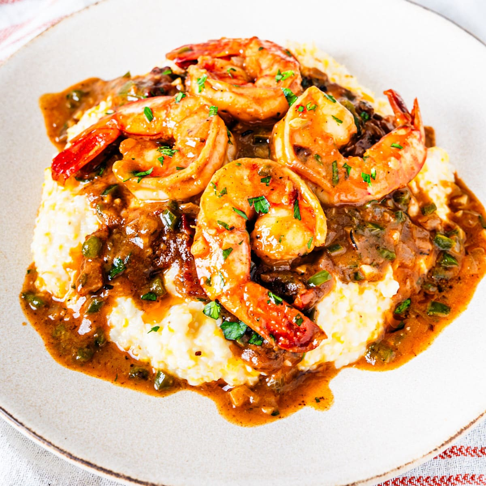

Home
Shrimp and Grits

Description
This is a recipe for the most delicious Shrimp and Grits you will ever taste!
Ingredients
- Shrimp
- Grits
- Creole Seasoning
Steps
- Set a large pot over medium heat, then stir together 3 cups of chicken stock and 1 cup of milk and bring to a simmer.
- Add the grits and whisk constantly for around 1 minute. Cover the pot and reduce the heat to maintain a low simmer. Cook for 15-20 minutes, stirring every 3-4 minutes, until the liquid is absorbed and the grits have a creamy texture. If they seem too dry, add more milk or stock as needed. Remove from heat and stir in 1 tablespoon of butter and 1 teaspoon of salt.
- While the grits cook, heat a 12-inch skillet over medium heat. Add the bacon strips and cook for 2-3 minutes until crispy. Transfer the bacon to a plate lined with paper towels using a slotted spoon. Drain the grease from the pan, reserving 1 tablespoon.
- Add the chopped onion and green pepper to the pan with the reserved bacon grease and cook for 2-3 minutes until softened.
- Add the garlic and cook for 30 seconds. Then, add the shrimp and season with 1 teaspoon of Creole seasoning. Cook for 3-4 minutes, stirring occasionally, until the shrimp is cooked through. Transfer the shrimp to a plate.
- Melt 2 tablespoons of butter in the pan, then add the flour and cook for around 1 minute, stirring constantly. Stir in 1 cup of chicken stock, 2-3 teaspoons of Creole seasoning (to taste), and 2 teaspoons of Worcestershire sauce. Cook for around 1-2 minutes until the sauce is thickened.